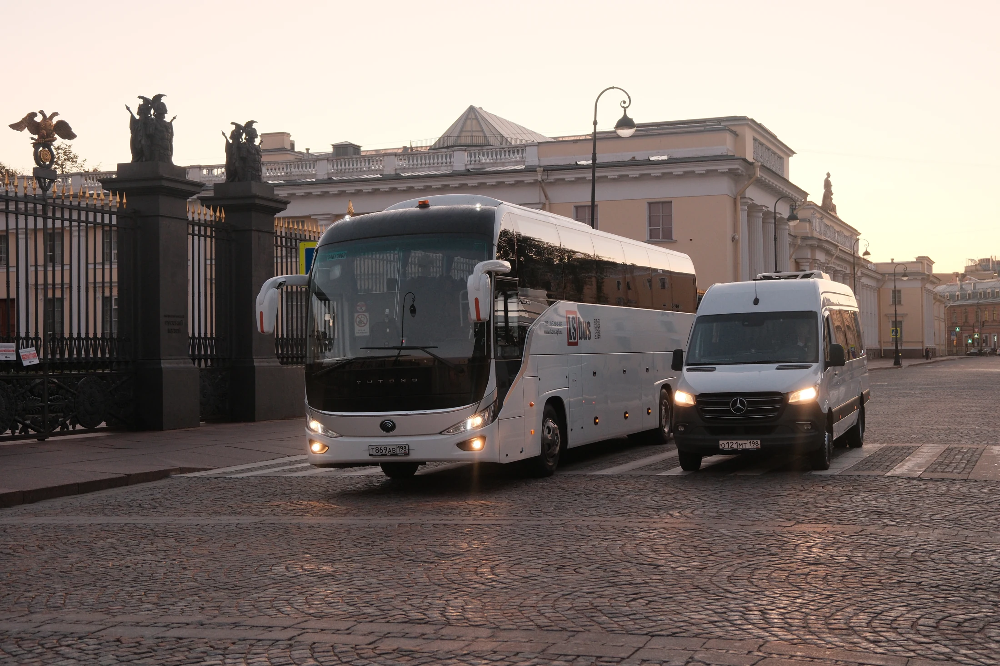
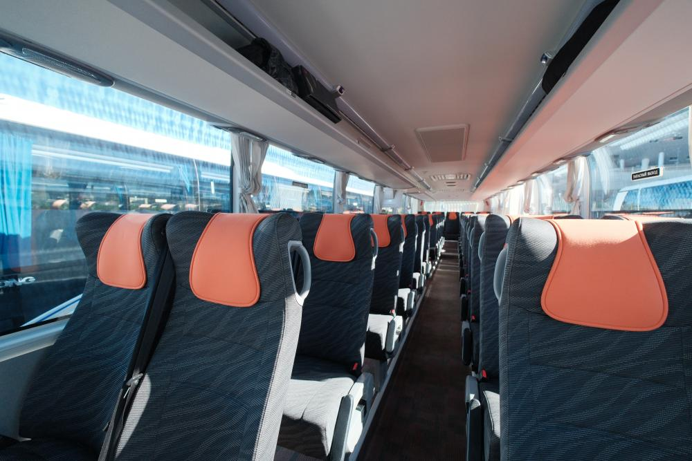
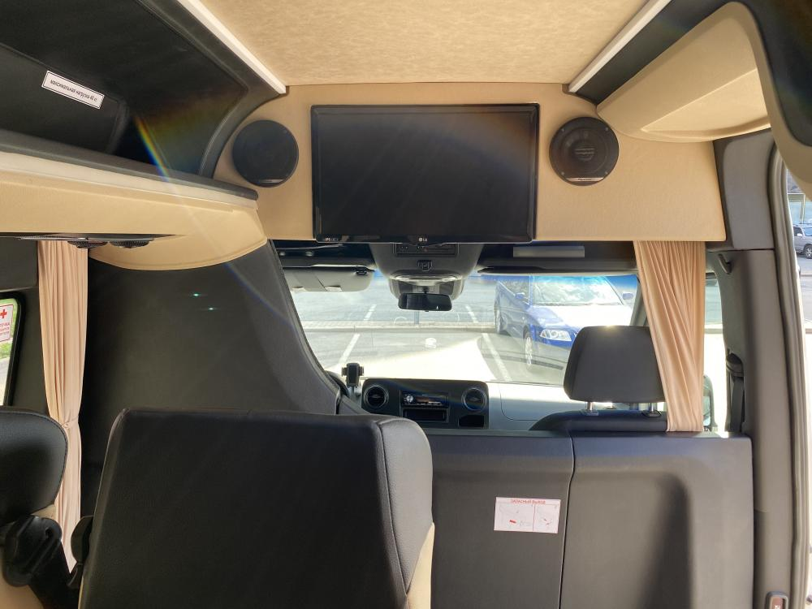
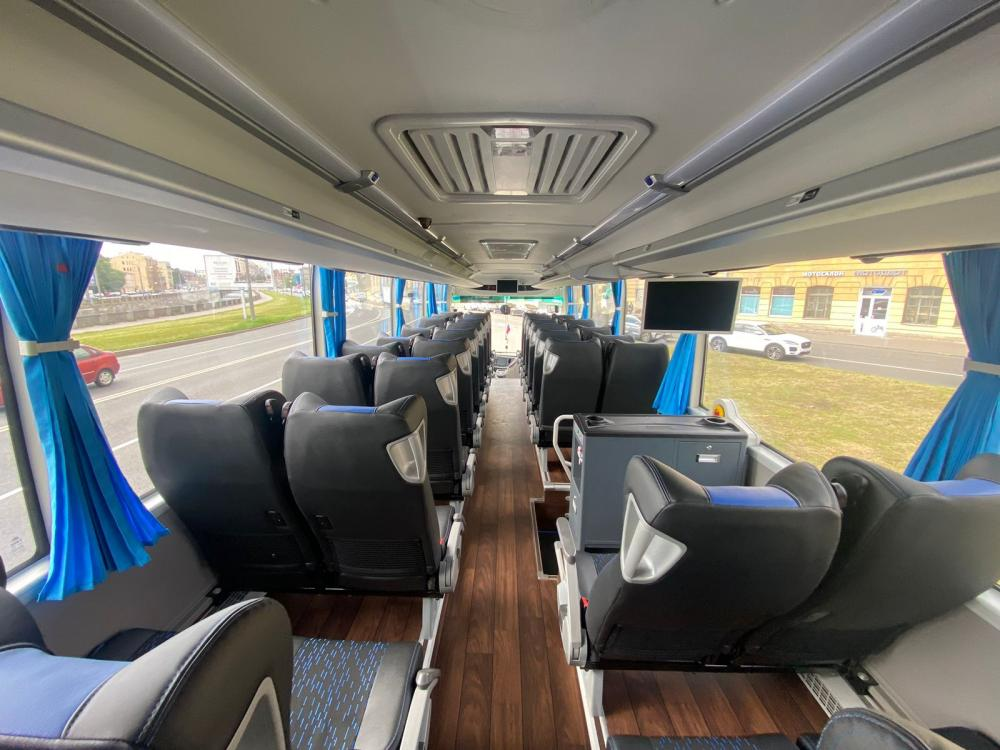
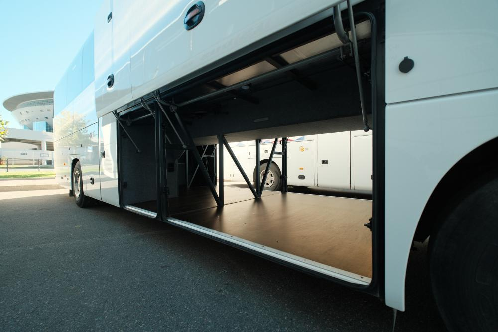
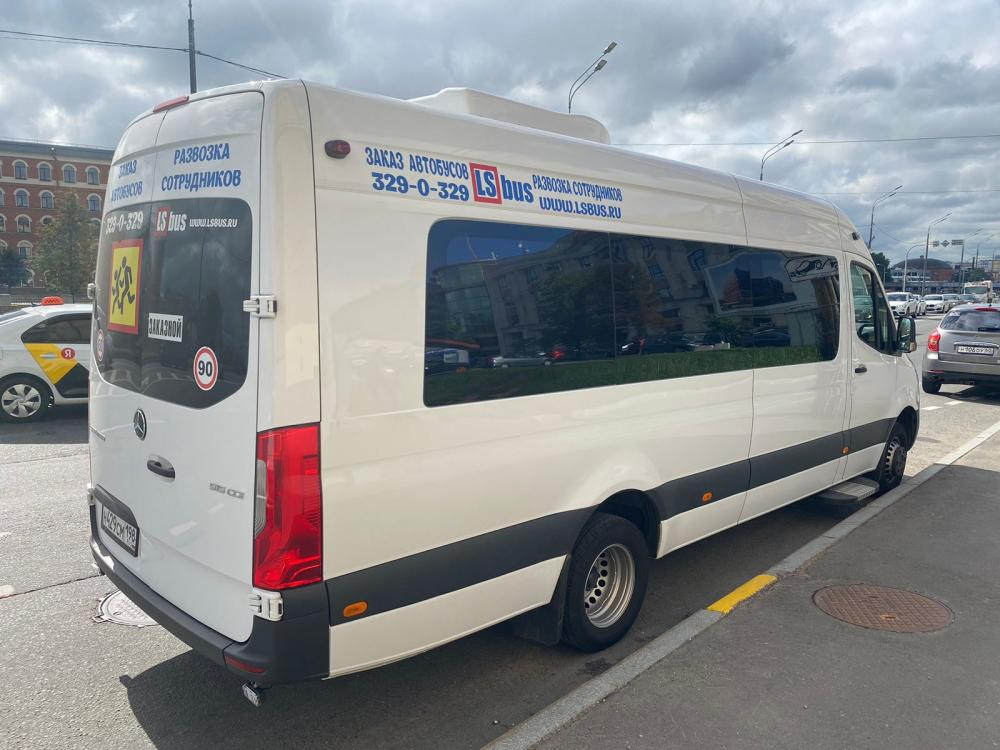
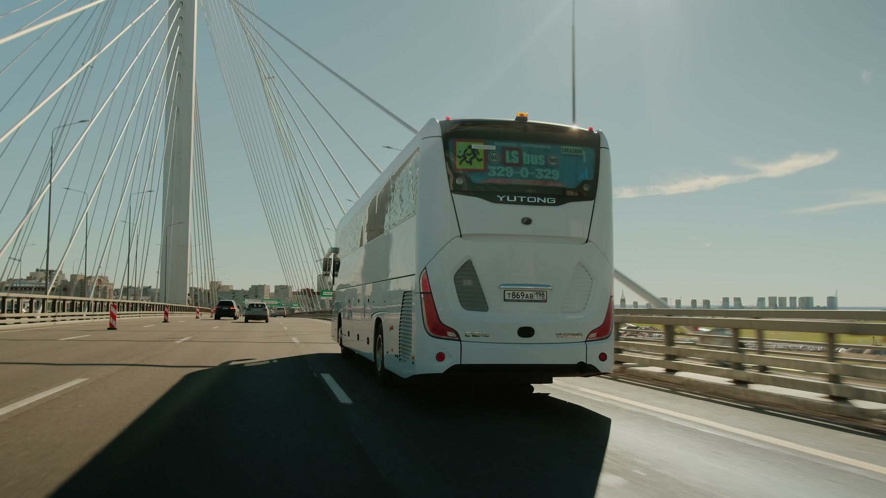

ПРЕДВАРИТЕЛЬНЫЙ СОСТАВ
Схема показывает вместимость, а не расположение кресел. Расчёт по тарифам действующего сайта. Точные условия и наличие уточнит менеджер.
АВТОБУСЫ С ВОДИТЕЛЕМ В САНКТ-ПЕТЕРБУРГЕ
Укажите маршрут и число пассажиров.
Встретим гостей в Пулково, отвезём на экскурсию или соберём делегацию. Для одного маршрута можно заказать несколько машин.

ВЫБЕРИТЕ СВОЙ ФОРМАТ












Регулируемые кресла, кондиционер, кулер с водой, холодильник, микрофон и место для гида.
ПЛАН ПОЕЗДКИ / ВАША КОМПАНИЯ
Один маршрут может объединить несколько машин.
Укажите количество людей — и посмотрите состав.
ПРЕДВАРИТЕЛЬНЫЙ СОСТАВ
Схема показывает вместимость, а не расположение кресел. Расчёт по тарифам действующего сайта. Точные условия и наличие уточнит менеджер.
МАРШРУТЫ / ВАША ПРОГРАММА
Маршрут под вашу программу: от обзорной экскурсии по Петербургу до поездки в пригороды. Подберём транспорт по размеру группы.
ПЕРЕД ПОЕЗДКОЙ
Подберём несколько автобусов под общий маршрут. Укажите общее количество людей — предварительный состав появится в подборе, конкретные машины подтвердит менеджер.
На действующем сайте указан минимальный заказ 3 часа + 1 час подачи. Условия и окончательную стоимость согласуем для вашего маршрута.
Да, у LSBUS есть направление детских перевозок. Сообщите возраст, число детей и сопровождающих, дату и маршрут — менеджер уточнит организацию поездки.
После согласования наличия, стоимости и условий с менеджером. Подбор на сайте помогает спланировать поездку и сам по себе не резервирует машину.

ЧЕЛОВЕК ЗА МАРШРУТОМ / LSBUS